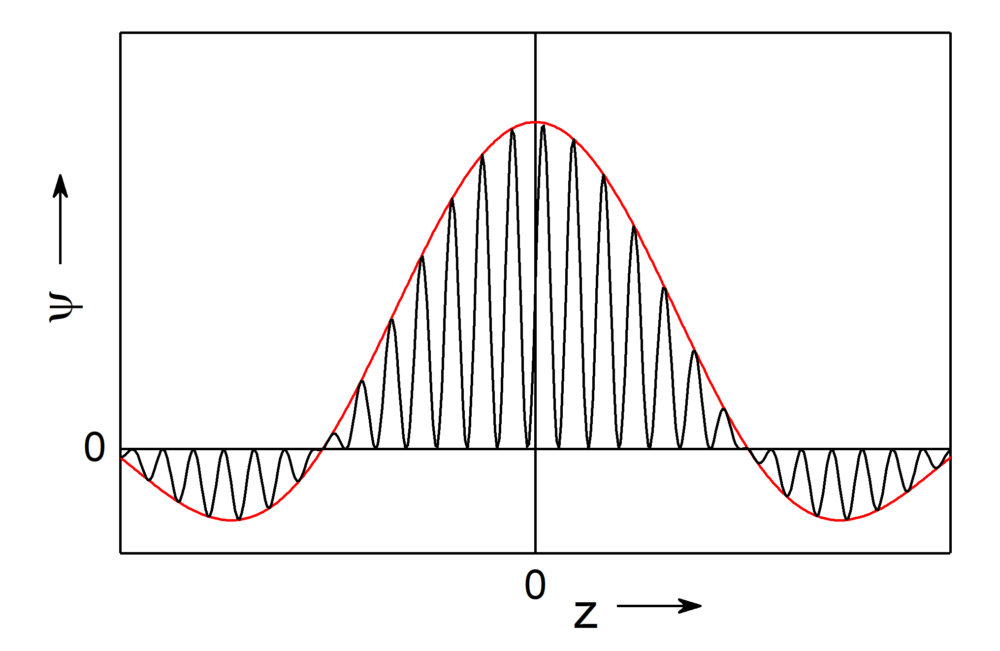
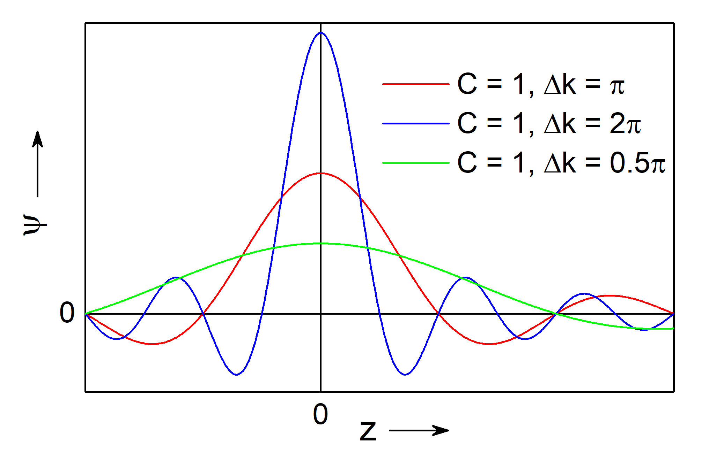
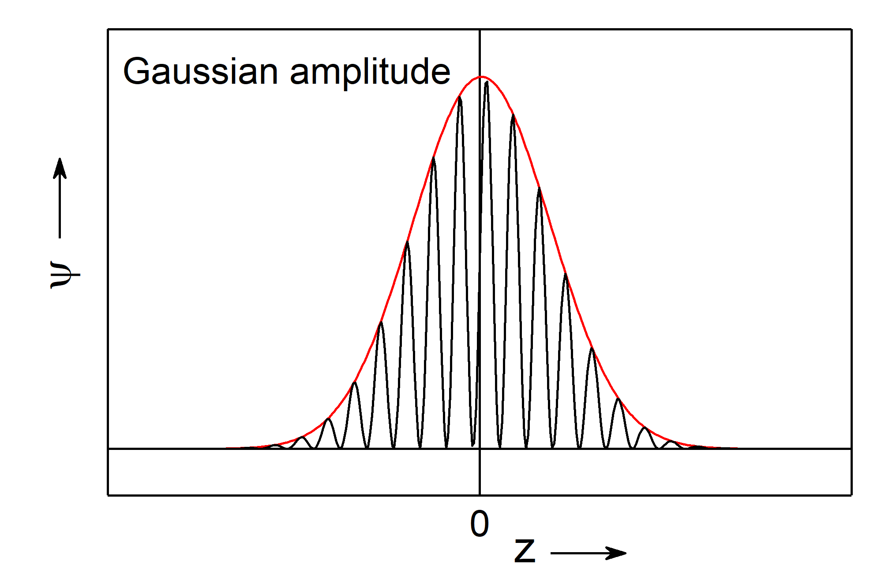
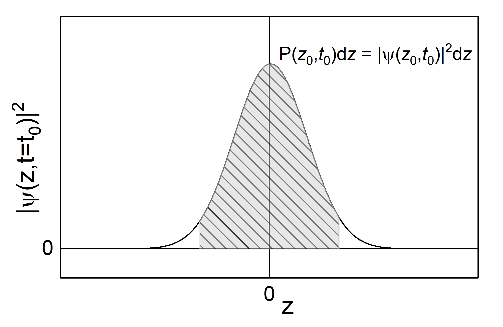

This page was generated from `/home/lectures/exp3/source/notebooks/L23_AMA/L23_matter_waves.ipynb`_.

Waves of Matter¶
Plane waves¶
In order to properly descripe the wave character of a particle with mass \(m\) that is porpagating along teh \(z\) direction we chose a similar ansatz as for elkectromagnetic light,
Even though we are stil discussing properties of matter, the above equation has the shape of a wave function. Thus, one ofter referes to matter waves. In accord to the de Broglie wavelength and the analogue description of atomistic particles as waves, we can derive the kinetic energy as
and the moentum as
which allows us to reformulate the wave equation as
However, there is still an important distinction between photon of electromagnetic waves and corpucles of matter waves. In the case of electromagnetic waves the phase velocity does not depent on the wave’s frequency. From teh condition
it becomes evident that
and represents the vanishing dispesion of electromagnetic waves in vacuum \(\mathrm{d}v_{\mathrm{ph}}/ \mathrm{d} \omega = 0\). This relation does not hold true for matter waves. For a free particles (force-frre motion in constant potential) we know
and
If we now make use of the definition of the phase velocity \(v_{\mathrm{ph}} = \omega / k\), it becomes evident that the dispersion
Matter waves show a dispersion and its phase velocity does depent on the wavevector and thus on the momentum of the particle. If the particle moves with the velocity \(v_{\mathrm{p}} = p/m = \hbar k / m\), then
and the phase velocity of teh matter waves corresponds to half the velocity of the particle. As a consequence, a matter wave an dteh according phase velocity is not suited to describe the motion of particles without further cosiderations. Having in mind that a plane wave is distributed across teh whole space, whereas a partcile is somehow located, we provide remidy through the intoduction of wave packages.
Wave packets¶
The major distinction between a matter wave and a classical particle is the fact that the amplitude of a plane wave does not depent on the position in space and the wave is distributed across the whole space. A classical particle, instead, is well located at any time. In the following we will locate a matter wave by means of wave packets (which are sometimes referred as wave trains).
If one constructs a superposition of plane waves each having its amplitude \(C_j\), frequency \(\omega_j\) close to the other frequencies, and wave vector \(\vec{k_j}\) parallel to the other wave vectors and propagating along \(z\), the superposition reads as
and exhibits the maximum amplitude at positions \(z_m\). This position of maximum amplitude propagete with teh group velocity
along teh \(z\) direction. If we now assume the superposition of an infinite number of waves whose frequency values \(\omega\) cover the whole interval \(\left[ \omega_0 - \Delta \omega/2 ; \omega_0 + \Delta \omega/2 \right]\) and wavenumbers \(k\) are in accord to that from the interval \(\left[ k_0 - \Delta k/2 ; k_0 + \Delta k/2 \right]\), the summation becomes an integration
If the width of the wavenumber interval \(\Delta k\) is small compared to the wavenumber \(k_0 \gg \Delta k\), we can expand \(\omega \left( k \right)\) in a Taylor series and neglect higher terms than the linear one resulting in
If further the amplitude \(C_j\) does not change significantly on teh intervall \(\Delta k\) (\(\ll k_0\)), we can replace \(C_j\) through a constant \(C \left( k_0 \right)\). Now we get
with \(\kappa = k - k_0\) and \(u = \left(\mathrm{d} \omega / \mathrm{d} k \right)_{k_0} t - z\). The integration then results in
with
 
Fig.: (left) A wave packet (red) with constant amplitude :math:`C` on the interval :math:`Delta k = pi` and indicated matter wave (black). (right) The same wave packet as left (red, :math:`Delta k = pi`) along a with a wave packet on a narrower broader interval (blue, :math:`Delta k = 2,pi`) and narrower interval (green, :math:`Delta k = 0.5 , pi`). It bis evident that the broader the intervall, the narrower is the width of teh packet.
The function \(\psi \left( z , t \right)\) represents a plane wave whose amplitude \(A\) exhibits a maximum at \(u=0\), and therefore \(z_{\mathrm{m}} = \left(\mathrm{d} \omega / \mathrm{d} k \right)_{k_0} \cdot t\). We call this function \(\psi\) a wave packet. Its shape, namely hight and distance to side lobes, does depent on the width o fteh interval \(\Delta k\) and the distribution of the amplitude \(C \left( k \right)\). The wave packet’s maximum propagates with the group velocity
along teh \(z\) direction. Moreover, we can maje use of teh relation
and derive for teh goup velocity
Thus, a wave packet is better suited than a plane wave for describing a particle on the microscopic scale, because characteristics a wave packet can be interlinked with the according properties of a particle in teh classical sense.
The wave packet’s group velocity \(v_{\mathrm{g}}\) corrsponds to teh particle’s velocity \(V_{\mathrm{p}}\).
The wavevector of the packet’s center \(\vec{k_0}\) determines the momentum of the particle \(p_{\mathrm{p}} = \hbar k_0\).
A wave packet is localized (in constrast to a plane wave) and the wave packet’s amplitude has maximum values only in a limited range \(\Delta z\). In the case \(t=0\) we can calculate the width of teh central maximum of as distance between the roots \(\Delta z = 4\pi/\Delta k \le 2\pi/k_0 = \lambda{\mathrm{p}}\). Thus, the width of the particle is at least as big as its de Broglie wavelength.
Concerning side lobes we can improfe the description of particles through wave packets, if we use a Gaussian distribution for the amplitude instead of a constant value,

Fig.: A wave packet (red) with a Gaussian amplitude and indicated matter wave (black). Note, sidelobes as in teh case of a constant amplitude does not appear for a Gaussian amplitude.
Despite the correspondences we have figured out so far, a wave packet is not directly the wave equivalent model of a particle. Reasons are,
The wave function $:nbsphinx-math:psi `:nbsphinx-math:left`( z, t \right) might adopt a negative or complex value. Those values cannot be directly correlated with real measurands.
Due to the dispersion of matter waves, teh width of the wave packet will increase with time. Thus, the wave packet alters, whereas teh shape of a classical particle remains constant.
An elementary particle like an electron is supposed to be indivisible. A wave, however, might be slit into two or more partial wave that propagate indepedently.
Those arguments then motovated Niels Born to propose a statistical interpretation of matter waves.
The statistical interpretation of matter waves¶
When a particle arrive at an interface, it will be either reflected of transmitted. Therefore, it appears reasonable to correlate the reflected and transmitted parts of a matter wave with the according likelihoods of a particle beeing reflected or transmitted, respectively. Because likelihood itself is a real number which adopts values between \(0\) and \(1\), the amplitude of a matter wave is not suited for this purpose. Instead, one introduced the square of the complex wave function \(\left| \psi \left( z, t \right) \right|^2\) as propability density. The propability that the particle is located within the interval \(\left[z, z+\mathrm{d}z \right]\) at time \(t\) is proportional to the square of the wave function \(\psi \left( z, t \right)\) representing this particle,
A particle which propagates along \(z\) direction is supposed to be located between \(z = -\infty\) and \(z=+\infty\), hence the propability to find our particle inbetween \(-\infty\) and \(+\infty\) is \(P = 1\). That is why the normalization condition reads as
thus, the factor of proportionality is \(1\) and we are allowed to state

Fig.: The squared wave packet with a Gaussian amplitude distribution (black line) and propability density (area under the curve, shaded gray).
In the case the particle propagetes within a three-dimensional space, we can assign a three-dimensional wave packet \(\psi \left( x,y,z, t \right)\) to this particle. As discussed above, the particle has to be located somewhere in space and as a consequence the propability to find it within the whole space is \(1\) and we can state the nomalization condition
Thus, we can conclude,
Every partice can be represent through a matter wave \(\psi \left( x,y,z, t \right)\) being determined through the wave function \(\psi \left( x,y,z, t \right)\).
The quantity \(P \left( x,y,z, t \right) \, \mathrm{d}x \, \mathrm{d}y \, \mathrm{d}z = \left| \psi \left( x,y,z, t \right) \right|^2 \, \mathrm{d}x \, \mathrm{d}y \, \mathrm{d}z\) with its normalization \(\int\int\int \left| \psi \left( x,y,z, t \right) \right|^2 \, \mathrm{d}x \, \mathrm{d}y \, \mathrm{d}z = 1\) represents the propability to to find the particle within the volume element \(\mathrm{d} V = \mathrm{d}x \, \mathrm{d}y \, \mathrm{d}z\) at the particular time \(t\).
The propability to find the particle is biggest at the center of the wave packet.
the center of the wave packet propagates with the group velocity \(v_{\mathrm{g}}\) which is identical to the classical particle velocity \(v_{\mathrm{p}}\).
The propability to find the particle within an infinite volume is not :math:`0`. This means one cannot locate the particle in a single spot \(\left( x,y,z \right)\). The particle’s location is smeared which corresponds to the distribution of the wave packet and obey an uncertanty.